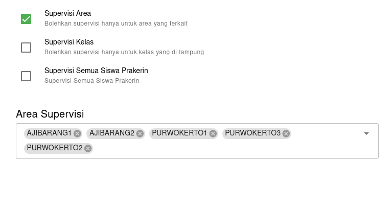

Admin / Guru
Tambah manual
Sama halnya seperti kelas dan siswa klik button tambah admin / guru
Perijinan
Masukan hak akses untuk admin / guru yang bersangkutan
Kelas yang di tampung
Akan berguna untuk mengatur kelas mana saja yang bisa di akes oleh guru pada perijinan Konfirmasi jurnal kelas dan Supervisi Kelas
Supervisi Area
Berfungsi untuk membatasi di industri mana saja guru dapat melakukan supervisi

Jangan pilih semua perijinan yang sama
dalam arti jika guru mempunyai perijinan Supervisi Semua siswa prakerin dengan Supervisi kelas, maka perijinan Supervisi Semua siswa prakerin tidak akan berguna karna tertumpuk oleh Supervisi kelas
Guru yang di nonaktivkan
Guru yang di nonaktivkan tidak akan bisa login kedalam aplikasi